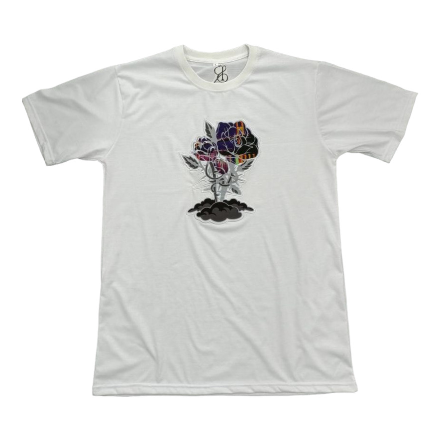
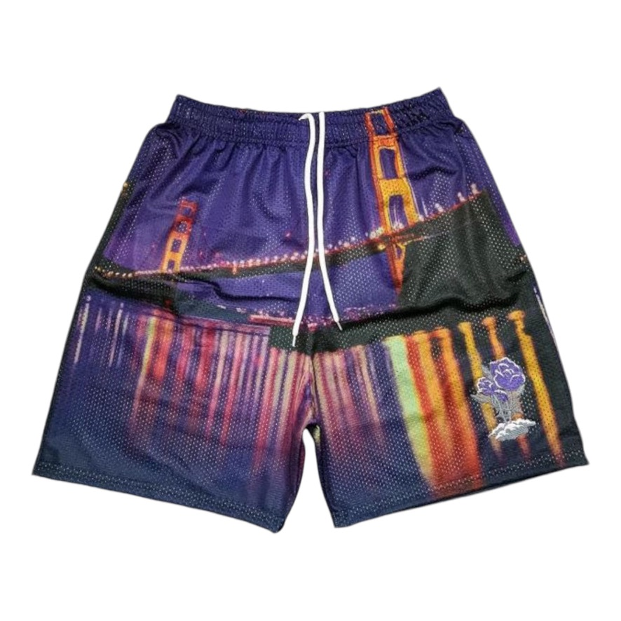

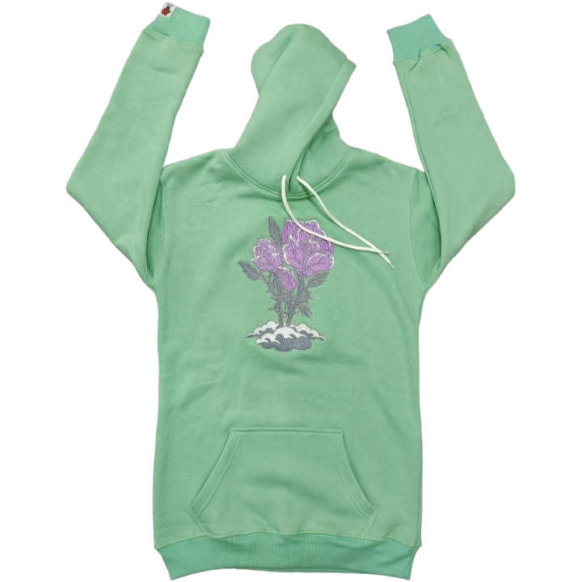
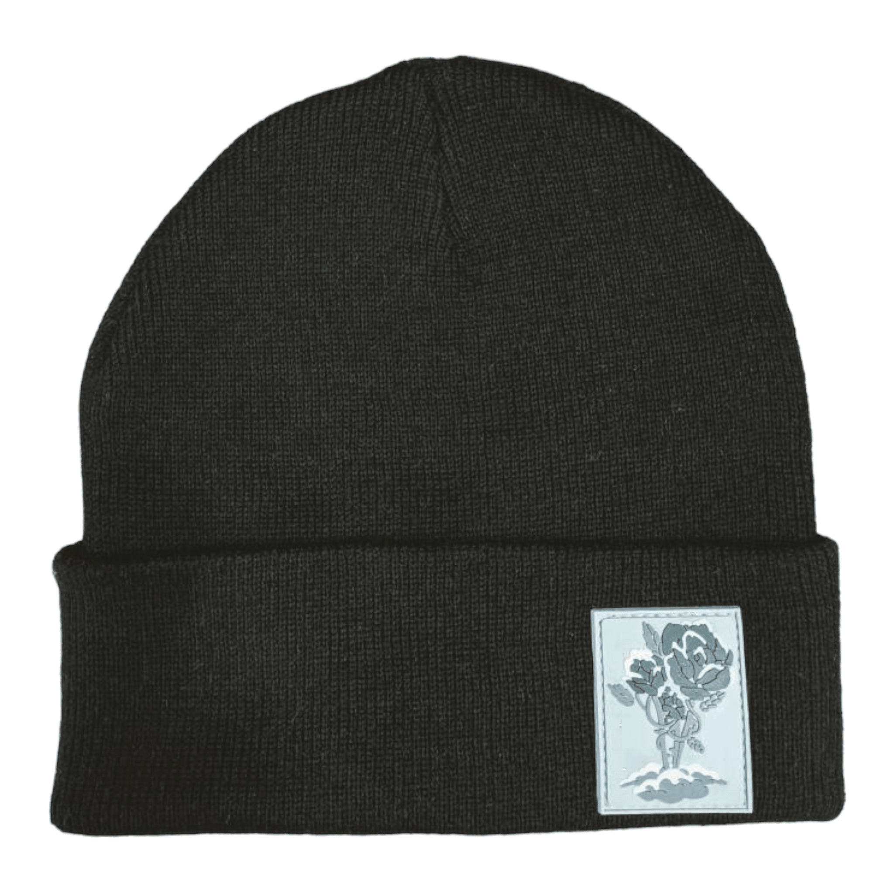
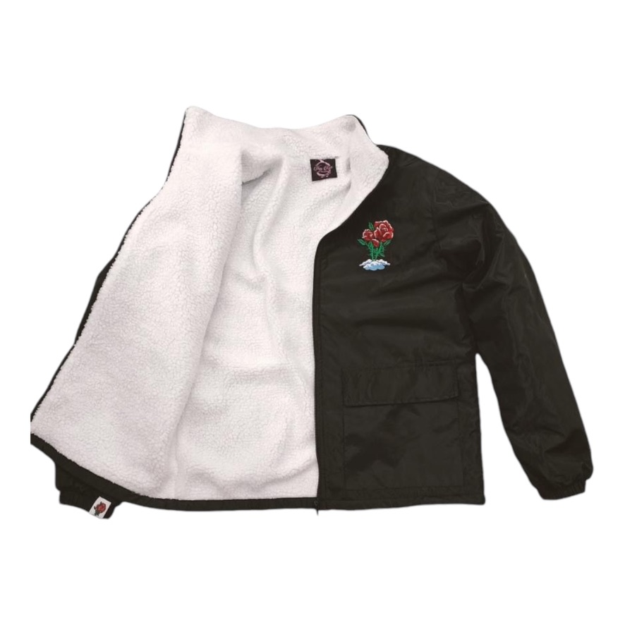
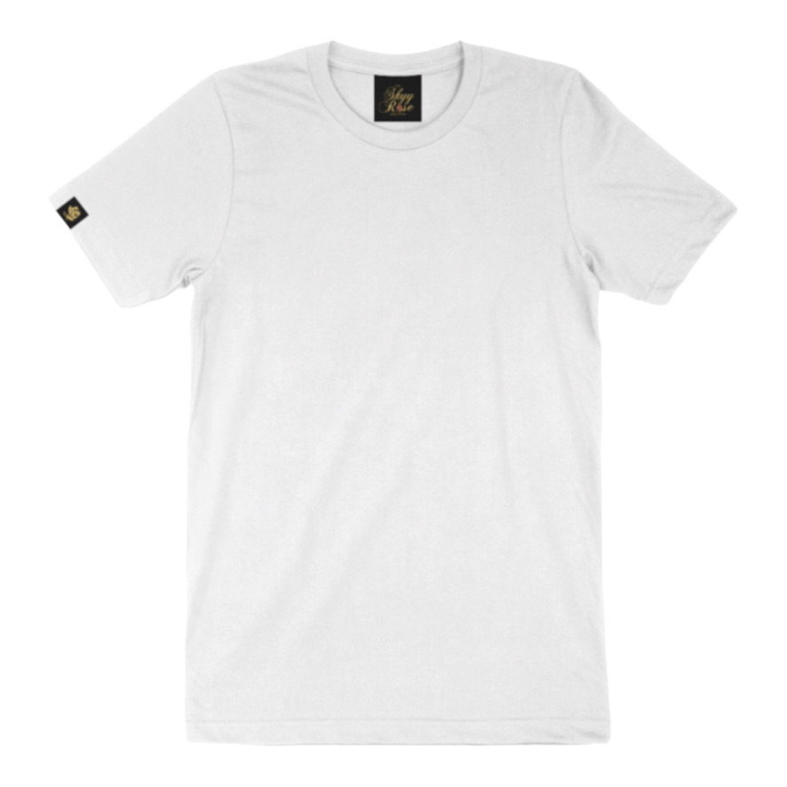
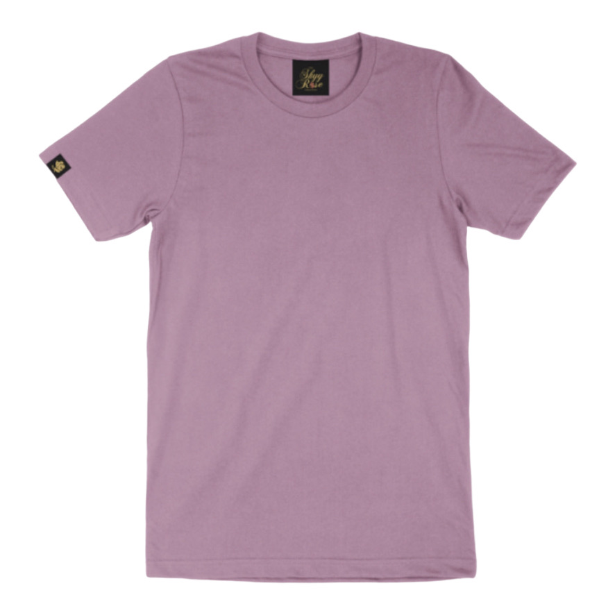
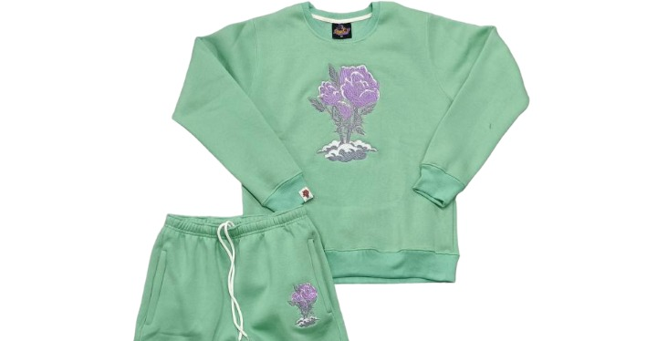
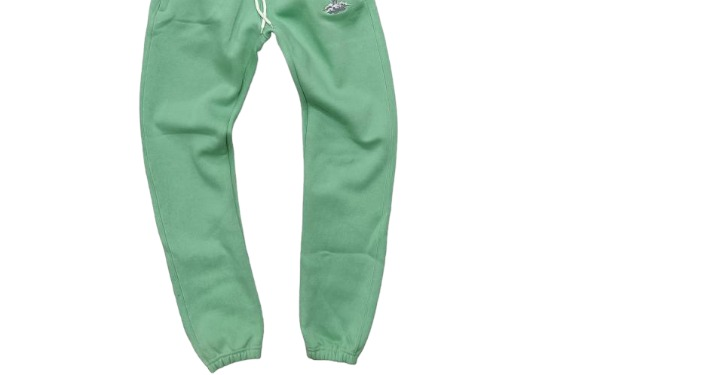
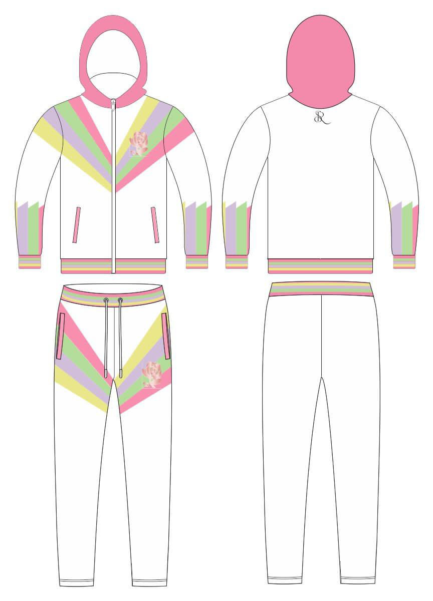
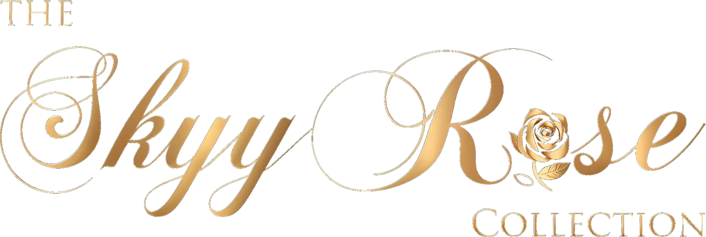
The beginning of it all — where it started from.
gold #D4AF37rose_gold #B76E79accent #D4AF37accent_dark #B8960Csecondary #B76E79bg #0A0A0Atext #F5E6D3script — Pinyon Script
Pinyon Script — The Quick Brown Fox 0123
caps — Cinzel
Cinzel — The Quick Brown Fox 0123
body — Cormorant Garamond
Cormorant Garamond — The Quick Brown Fox 0123










# Signature — Designer Copy > Source: docs/brand/collection-stories.md (canonical). Seed: "The beginning of it all — where it started from." ## Origin Signature is Chapter One. The collection that started everything — drawn at 4 AM, broke, a baby on the way, every manufacturer having scammed the founder. The script logo sketched until it was right. This is the origin as Corey names it, not as outside observers frame it. The founding moment, verbatim from `collection-content.php`: > "I drew the first rose on a night I couldn't afford dinner. Broke, a baby on the way, every manufacturer I'd worked with had scammed me. But I sat there sketching that script logo until 4 AM because something in me knew — if I could get this right, everything changes. Signature is that night made permanent." Landing page subtitle, verbatim: *"Not basics. Blueprints."* About page description: *"The first rose, the first script. Where SkyyRose began — gold-accented luxury streetwear, gender-neutral by default."* **Bay Bridge geography (locked 2026-05-23).** Corey's framing: > "The Bay Bridge is Oakland. It connects Oakland to frisco." The Bay Bridge SKUs (sg-001 Bay Bridge Shorts, sg-002/003 Stay Golden, sg-005 Bay Bridge Shirt) do not violate the Oakland-only brand canon — the bridge is an Oakland artifact. Frisco is what sits on the other end. Copy never frames Signature as "Bay Area"; the bridge is the Town's, not the bay's. "Frisco" is the locals' word for the city across the water and is voice-correct when SF is referenced at all. *Sources: `inc/collection-content.php`, `template-landing-signature.php`, `skyyrose.co/about/`* ## Voice & Mood Foundational. No nostalgia — this is not looking back, it's establishing bedrock. The tone of someone laying cornerstones. Quieter than Black Rose, more intimate than Love Hurts. The origin chapter has confidence without performance. Landing page story: *"Signature is the collection that started everything. Before the limited drops and the press features, there was a father in Oakland who believed everyday clothes should feel like something."* Founder quote from `collection-content.php`: > "They told me luxury doesn't come from Oakland. I said luxury grows from concrete — and I meant that literally. This collection is the concrete. Everything else grew from here." Verbatim founder quote also present in `template-parts/collection/founder-pullquote.php`: > "Four years ago I never would have thought I'd be here. I had no drive, lost it all, a baby on the way, and was broke. But we knew we had to get it by any means necessary." Mood peers (aligned 2026-05-25 to locked canon at `docs/brand/visual-references.md` — The Five): **Kith** (monogram-led editorial), **Aimé Leon Dore** (acceptable adjacency, retail-anchored editorial), **Fear of God** (cinematic spareness). The Row reference retired — European-luxury-house lineage is locked out for SkyyRose. Gender-neutral by default. ## Story Tagline **"Not basics. Blueprints."** *(Verbatim landing page subtitle, `template-landing-signature.php`. Not invented.)*